Edit tools
Edit tools
The edit dialogue is used during production of weather charts such as analyses and sigmaps. It
contains tools for editing scalar fields and drawing tools for fronts, areas and symbols.
Completed charts can be sent directly to a database for distribution to other regional offices.
Weather charts (possibly covering different regions) may be combined in to a master product with
special tools in this dialogue. See the setup-file for details in defining products.
Start a new product:
 |
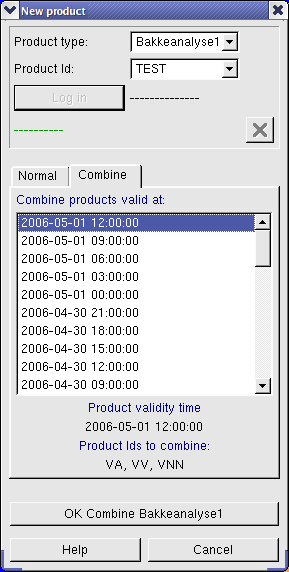 |
- Select Product type, e.g. Ground analysis
- Select Product Id, e.g. VA.
- If you have selected a product Id which sends analyses to the database,
you need to click log in and log in with your username and password.
-
If no similar analysis with the same product type, product Id and time
already has been started, the message "Product available" will appear
in the dialogue after logging in and editing can be started. Otherwise
the message "Already in production by..." will appear. You can choose
to take over the product by clicking the red x, you will be asked to
confirm this choice.

- Select Normal or Combine
-
Normal - starts a normal analysis based on scalar fields on
the screen or fields from earlier analyses. What fields are used as
a base is selected by clicking the button for each field included
in the analyses (e.g. MSLP and Tendency). Similarly objects from
earlier analyses can be used by clicking the button labelled
"Objects" (See below).
-
Combine - starts combining. A list of available times for the
given product type and product id is displayed and can be selected from.
- Insert the correct validity time for the product.
- OK ... starts editing. If normal start time for the product
is entered in the setup-file and the machine time
is outside this, a message is displayed:
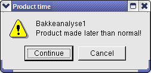
In normal analysis fields or objects can be edited. When
combining, the Connect tab will be used, where several analyses
can be connected.
When a new analysis is started, existing edited fields, fronts and
symbols will be deleted.
Define start objects/fields for editing:
Clicking the Objects button in the
New product dialogue will display the Pick objects for editing
dialogue.
- Select the type of product the objects are from (e.g. sigmaps or surface
analysis).
- Select time and product id from the list. Products in italic are
stored locally, others are official products.
- Repeat for every product you want to add objects from.
- The list Selected objects show what products the objects are read
from. If you don't want to add all types of objects, click the product in
the list and select fronts, symbols, areas and/or form.
Products can be deleted from the list by selecting them and clicking
Delete.
- Update refreshes the list of available products.
Clicking the field buttons in the New
product dialogue displays the Pick fields for editing dialogue.
- Select the type of product the field is retrieved from or Model field.
- If Model field is selected, choose between available fields in the list.
If a product type is selected, select time and product id from the list.
Products listed in italic are stored locally, others are official
products.
- The box Selected fields shows the selected fields or what
products the field is read from. You can delete a product from this list by
selecting it and clicking Delete.
- Update updates the list of available products/fields.
Normal Editing:
During normal editing you can choose between the tabs Field and
Objects in the editing dialogue.
You can at any time save changes you have done by clicking the
Save button (or ctrl-s).
The Send button is used to send the analysis to the database for
distribution to all regions, and to mark the analysis as approved and
ready for sending to the weather service offices etc. By clicking
"Approve product" here, the distribution will happen automatically
within a short period.
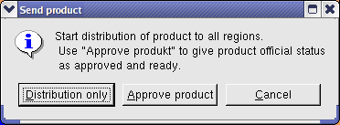
Status of saving, sending and approving can be found at the top of the
editing dialogue under the product indicator. If a local save has been
done, it will show: Saved 'date time'. If the last changes also
have been sent to the database Saved will be shown in green. If the
analysis is approved the text and approved will be added in green.
Finally if the product has been saved and/or distributed without being
approved after approval: approved is shown in red.

By selecting Comments, a window where you can enter
comments related to the analysis is shown. These
will also be saved, and will be read in if you start a new analysis by
adding old objects.
End ends the editing. If you have not saved/sent your last changes
you will be asked whether you want to.
Product starts production of a new product.
While editing the time of the observations can be altered. This is done
with shift-left arrow and shift-right arrow. The time step
can be altered with Obs. time step in the dialogue.
LM = Left Mouse button
RM = Right Mouse button
MM = Middle Mouse button
 |
Editing scalar fields
Select the type you wish to use for the area of influence
(circle, ellipse, etc.). Use the RM on the map to change the size of this
area. If you select ellipse, you can choose the eccentricity of the
ellipse with the slider under elliptical shape.
Then choose the type of activity in the list:
- Edit value is used to increase/decrease the depth of the field
- hold the LM down and move the mouse up/down.
- Move is used to move an area. Hold the LM down and move.
- Alter gradient is used to increase/decrease the gradient in the
field i.e. the density of lines (For MSLP this works like adding a wind
vector and then correcting the field geostrophically) - hold the LM down
and move the mouse.
- Line w/o smoothing is used to redraw a single isoline. Influence
on the field is shown as a circle while the line is drawn. Hold the LM
down and move the mouse.
- Line w/smoothing is the same as the above option, but also
adds smoothing of field and isoline. Hold the LM down and draw the
isoline.
- Line, limited, w/o smoothing is used to redraw a single
isoline. Influence on the field is shown as a circle while the line is
drawn, but is also restricted by the closest isolines. Hold the LM down
and draw the isoline.
- Line, limited, w/smoothing is the same as the above option, but also
adds smoothing of field and isoline. Hold the LM down and draw the
isoline.
- Smooth will smooth the field in the area of influence. Hold the
LM down while moving around. Only the area shown when the LM is released
remains smoothed.
Use the Undo button (or ctrl-z) to undo edits. You can use Redo
(ctrl-y) to redo what you have undone. |
Drawing objects
Here you will find tools for drawing graphical elements on the map.
Select main category in the top list (fronts are default) and sub
category in the list under.
All graphical elements consist of a lot of single points. To mark a
point for editing, move the mouse pointer on top it (without
clicking any of the mouse buttons), so that it lights up.
The points (the "handles") are displayed as triangles for symbols, square
for fronts and circles for areas. The points are shown in a weak grey
colour when the mouse pointer is close to an object, to make it easier to
find the "handle" and mark the object.
Normally only one object can be marked at a time (first symbols are
checked, then fronts and finally areas). To mark multiple objects, hold
the mouse pointer over an object so that one or more points are marked and
push m. Move on to the next object and mark this in the same way.
To clear the marks on all objects push c. To temporarily hide all
marking of objects (e.g. to read observations) push g. Push
g again to redisplay the objects.
Use the Undo button (or ctrl-z) to undo edits. You can use Redo
(ctrl-y) to redo what you have undone.
 |
Fronts - select type of front from the list
Fronts are drawn by clicking the LM to mark where the front starts and
repeat to mark where it continues. The points are marked as squares. Push
p or RM to stop drawing the front.
- Deleting a whole front - mark the whole front (move the mouse pointer
over the front until all the points light up), and push the delete key.
- Deleting one point of a front - mark the point and push the delete key.
- Moving a point - mark the point, hold your LM down and move.
- Moving the whole front - mark the whole front, hold your LM down and
move
- Rotate/move front - mark one point, hold the MM down and move (one or
both end-points will not move)
- Flip front - mark the whole front, push the v button.
- Change front type - mark the whole front and push t/shift-t
to change type.
- New front of the same type - push the n button (new), and follow
the instructions above for drawing.
- New front of a different type - choose a new type in the list and start
drawing.
- Adding a node point in the middle of a front - hold the mouse pointer
on the line segment where a new point is wanted and push the f
button (for this to work, the whole front needs to be marked).
- Continue drawing a front - hold the mouse pointer over an end point, so
that only this is marked and push the f button. New points can now
be added by using the LM.
- Splitting a front - hold the mouse pointer on the line segment where
you want to split the front and push k (for this to work, the
whole front needs to be marked).
- Joining two fronts of the same type - move the fronts so that the end
points are close to each other, mark one or both and push the e
button.
- Copying and pasting fronts - To copy one or more fronts, mark the
front and push ctrl-c. Paste the front on the map by placing the
mouse pointer where you want the front and press ctrl-v.
|
Connecting fronts.
When "Connecting fronts" is selected in the editing dialogue, fronts with
end points close to each other will automatically connect. The end point
of one of the fronts is moved so that it shares a point with the other
front.
This is checked every time a front is moved, rotated, split or when a
point is added or removed from a front. If the "connecting fronts"
function is turned off, the fronts can be connected by selecting one of
the fronts and pushing j.
When two fronts of the same type are connected, these will be connected
as one front.
To connect the end points of a front to a arbitrary point on another front:
Move the front so that the end point is close to the other front, select
the front and push j.
The connection points will be shown as filled rectangles.
When the "connecting fronts" function is activated connected fronts will
behave as one front, meaning that if a front is selected by moving the
mouse pointer over it, connected fronts will be selected as well and will
for example be moved if one of the fronts is moved.
To disconnect a front, select the front and push q, or turn off
the "connecting fronts" function and move the front away from the
| 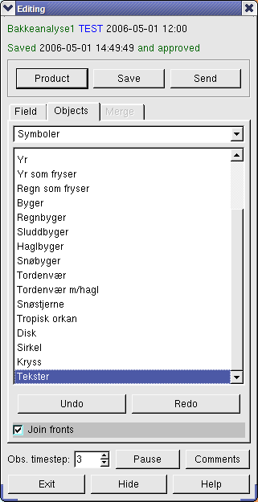 |
Symbols - choose wanted symbol from the list
- Drawing symbol - LM.
- Changing symbol size - select the symbol and use the +/- buttons.
The selected size will be the new default and new symbols will have this size.
To make the size of a symbol the default size, select the symbol and push
b. To set the default-size on all symbols, push shift-b.
- Changing symbol type - Select the symbol and push t/shift-t
to change type.
- Moving, deleting and drawing new symbols (e.g. for fronts).
- You can write texts on the map by choosing symbol type texts from
the menu. A text editing box will appear where text can be entered and
colour selected:
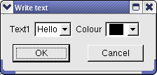
Click OK, then place the text as many places as wanted with LM. The text
can later be edited by moving the mouse pointer over the text and marking
it (as with fronts, symbols, etc) and push ctrl-e. The text editing
box appears and the text can be altered. The previously written text is
default, i.e. if you select texts in the menu again, you will not
get the text editing box, unless you double-click this selection in the menu.
The texts can also be moved, deleted, etc. in the same way as with symbols.
|
Areas - choose type of area in the list.
- These are drawn in the same way as fronts with the LM. The areas are
filled when the drawing is ended by pushing p or RM.
- Moving, deleting, drawing new, changing type and adding points are all
the same as for fronts.
- Copying and pasting areas - as for fronts.
Drawing sigmaps.

If product type sigmap has been selected, in addition to drawing fronts,
areas and symbols, symbols for significant weather maps can be drawn. Select
main type of sigmap in the top menu in the editing dialogue and select the
desired symbol in the submenu. Some of these symbols are made up of different
types of symbols and texts, where the texts can be edited.
- Drawing sigmap symbols - LM.
- Moving, deleting, resizing and changing type of sigmap symbols - as for
symbols. Contrary to other symbols, the default size of sigmap symbols is
not changed when resizing a symbol.
- Copying and pasting sigmap symbols - as for fronts/symbols. If several
of the same sigmap symbols with the same text are needed, one can be made
and copied and pasted where required.
- Rotating symbol - mark the symbol and push ctrl +/-. (Only works
on sigmap symbols).
- Sigmap symbols are by default surrounded by a white box which hides maps,
fields, etc. in the background. To toggle this, mark the symbol and push
o.
- Changing symbol text - mark the symbol and push ctrl-e. (See also
the paragraph on texts under symbols)
- To draw the wavy lines surrounding the areas with significant weather,
select areas or fronts in the main menu and Sig.weather in the
submenu. These are drawn in the same way as areas/fronts, i.e. LM marks
where the node points are and RM ends the drawing and closes the curve.
During sigmap editing a black frame will show what map section the
sigmap is valid for.
The symbol
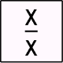
is for giving the altitude of significant weather. When it is selected, a text
editing box is shown for entering the two values:
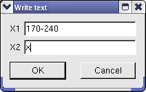
There are also symbols for entering one or two lines of text, e.g.:
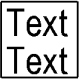
the text editing box looks like this:
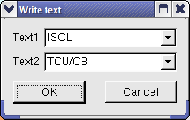
Symbols with both altitude and text can look like this:
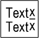
There are four fields in the text editing box, two for altitude and two for text:
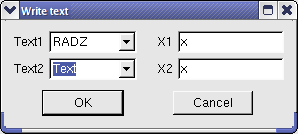
Tip: The easiest way to move from field to field when entering text is by using
the TAB-button.
Combining analyses
 |
To enter the Connecting tab, select Combine in
New product. Analysis for the selected time (The products validity
time) and for the product id's which are to be combined, are read.
What analysis to apply where is selected through borderline and
data source.
- Alter boundaries - For setting the boundary lines between the
different analyses. The lines can be moved and rotated, and points can
be removed in the same way as for fronts. The width of the overlap is
altered with the + and - buttons.
- Set data source - The data sources can be set from the product
id's available for the selected time and which belongs to the given
combination product (i.e. VA, VV, VNN). These are set in the same way
as symbols and can be moved, added and resized and type can be changed
in the same way.
- As the borderline and data sources are altered, the resulting analysis
will be shown. (While there is at least one data source in each area).
- To display an original region-analysis (fields and objects), push
1,2,3 etc. The numbering corresponds to the list of data sources
in the dialogue (e.g. 1 = show VA-analysis, 2 =
show VV-analysis, 3 = VNN-analysis). The combined
analyses are redisplayed by pushing the same button again. This also
works during later editing. While combining analyses, borders/areas can
be altered while only one region analyses is shown.
- Close connection - Combining is ended and fields and objects
in the analysis can be edited as normal.
- After combining is ended the borderlines will be shown. They can be
hidden by pushing l.
|
Comments.
Here you can add comments to the product. These will be saved along with
the objects in the database or on file and will be read when editing is
done on previous objects or when the object is viewed in the
object dialogue.
Product id, product type and date is set automatically when you start
comments (e.g. "DNMI round analysis1 2001-08-16 06:00:00").

To view previous comments, select Show previous comments.
Editing form.
For some products e.g. SWImaps, it is possible to define a form, where
values can be entered;
To write the form: Move the mouse pointer over the form. The places
where you can edit will be marked in blue text (The first time this will
be three dots "..."). When the mouse pointer is directly above where you
can edit, the text will turn red. Push ctrl-e to alter the text. A
dialogue will appear for entering the text, as you type the text on the
map will also change. Click "End" in the text window or push the "End"
button when finished.
To change multiple texts in the form successively: Place the mouse pointer
over a text (e.g. "..." in front of "position") and push ctrl-e as above.
Finish writing the text and push the "Page Down" button to go to the next
form. "Page Up" takes you back to the previous form. Push the "End" button
when you are finished writing. Note, as long as entering text in forms,
other Diana commands will not work.
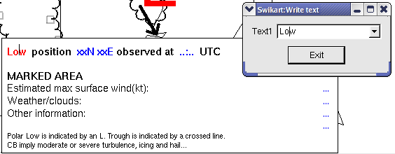